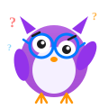

? ? ?404
¡Ups! Rakín se perdió
Esta página no existe, pero hay mucho más para descubrir en RakinMath. ¡Volvamos al camino!

? ? ?Esta página no existe, pero hay mucho más para descubrir en RakinMath. ¡Volvamos al camino!